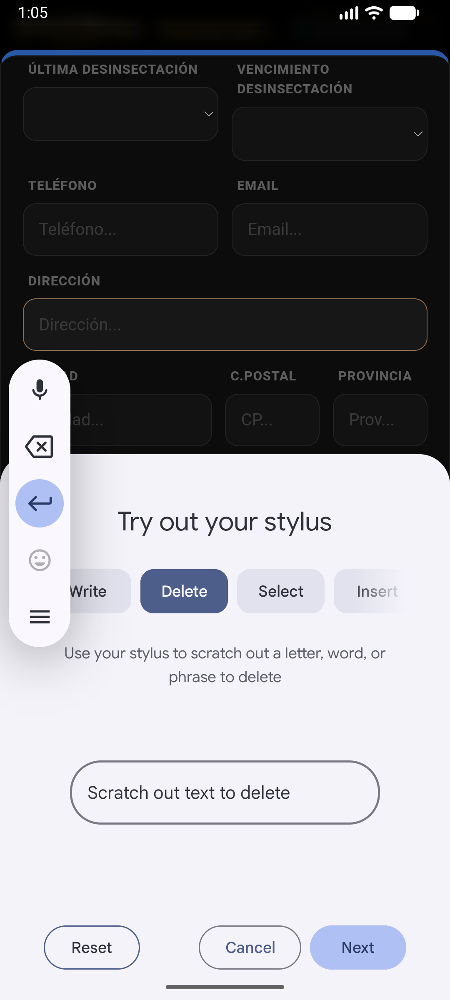
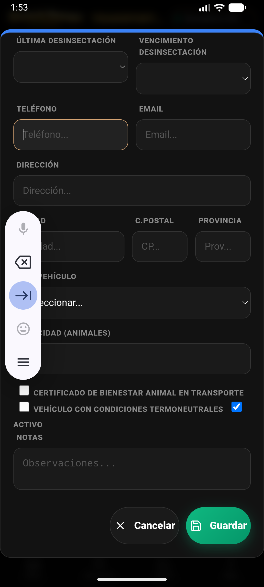

Control del Censo · Hub Ganadería · Guía Premium v4.8.0
MANUAL 360° · Gestión Individual y por Lote
📖 Introducción al Módulo de Animales
La gestión de Animales es el corazón de Livestock Manager. En la versión 4.8.0 Premium, hemos rediseñado el listado y las fichas para ofrecer una visión 360° de cada individuo, integrando trazabilidad, sanidad y producción en una sola interfaz.
La puerta de entrada a tus animales es el Hub de Ganadería en la barra inferior.

En el Hub de Ganadería, pulsa el botón "Animales" para acceder al censo completo.Listado Maestro
2. Listado de Todos los Animales
El listado muestra todos los animales registrados con indicadores visuales de estado y especie.
Listado Premium: Tarjetas con crotal, raza, rebaño y badges de estado (Activo/Vendido/Baja).
Tarjetas de Animal: Cada tarjeta es un resumen vivo. El color del borde izquierdo indica el estado sanitario o comercial.
Resumen por Especie: Los badges superiores indican cuántas cabezas tienes de cada especie (Vacas, Ovejas, etc.).
Acceso a Ficha: Pulsa sobre cualquier tarjeta para abrir la visión detallada del animal.
Inteligencia
3. Búsqueda y Filtros Inteligentes
Gestionar cientos de animales es fácil con las herramientas de filtrado neón.
Buscador Global: Escribe el crotal (incluso solo los últimos números), la raza o el nombre del rebaño. El listado se filtra en tiempo real.
Selector de Especie: Usa el desplegable dorado a la derecha para filtrar por especie y limpiar la vista.
Estados: Filtra rápidamente para ver solo los animales vendidos o los que están en la explotación (activos).
Registro
4. Alta de Animal (Wizard Premium)
El nuevo asistente de alta garantiza que no olvides ningún dato legal.
Formulario de alta con validación REGA y herramientas de captura rápida.
Validación de Crotal: Introduce el número. Si el formato es ES + 12 dígitos, el campo brilla en dorado. Si el animal ya existe, la app te avisará.
Asociación de Rebaño: Es obligatorio asociar el animal a un rebaño existente para que herede su ubicación (Zona).
Datos de Producción: Indica peso inicial y fecha de nacimiento para activar el cálculo automático de GMD (Ganancia Media Diaria).
Tecnología
5. Captura Rápida: SCAN y NFC
No pierdas tiempo tecleando en el campo. Usa la tecnología integrada.
SCAN (Cámara): Pulsa 📷 SCAN para activar la cámara. Lee códigos de barras o QR impresos en los crotales.
NFC (Lectura de Chip): Pulsa NFC para leer tags de proximidad compatibles (13.56 MHz).
⚠️ Nota técnica: Los chips electrónicos oficiales (LF 134.2 kHz) requieren un lector Bluetooth externo. El botón NFC interno es para tags inteligentes complementarios.
Visión 360°
6. Ficha Animal 360° (Detalle)
Al pulsar un animal, accedes a toda su historia y potencial productivo.

Visión completa: Trazabilidad, Genealogía, Historial Reproductivo y Pesajes.
Línea de Vida: Histórico de todos los eventos (traslados, vacunas, pesajes) en orden cronológico.
Gestión Reproductiva: Registra celos, inseminaciones y partos directamente desde la ficha.
Botón 360°: Pulsa "Ver 360°" para un análisis profundo de rentabilidad e historial de este animal concreto.
Livestock Manager Premium · v4.8.0 · Manual de Gestión de Animales